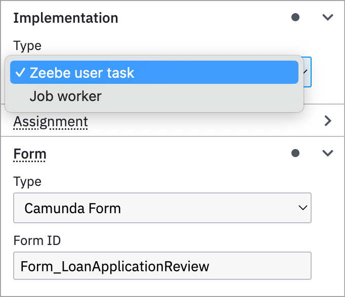
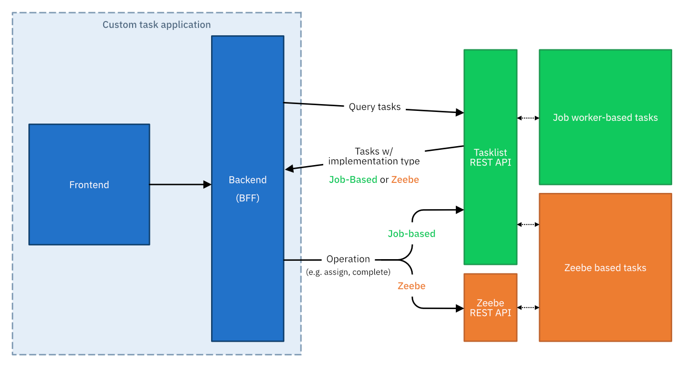

Migrate to Zeebe user tasks
Camunda 8.5 introduces a new user task implementation type: Zeebe user tasks. Zeebe user tasks have several benefits, including:
- Running directly on the automation engine for high performance.
- Removing dependencies and round trips to Tasklist.
- A more powerful API that supports the full task lifecycle.
In this guide, you will learn:
- Under which circumstances and when you should migrate.
- How to estimate the impact on a project.
- The steps you need to take for a successful migration without interrupting your operations.
Decide on your migration path
Zeebe user tasks require migration of the user tasks in both your diagrams and the task API.
With this in mind, you can migrate at your own pace. If you should migrate now or later, and what is required to migrate depends on your current setup and future plans.
Use the following decision helper questionnaire to figure out what's right for you:
Task type differences
Learn the differences between both task types and make an informed decision, and understand the new capabilities of Zeebe user tasks. Refer to this table for important high-level differences of the two task types:
Job worker-based user tasks Existing implementation | Zeebe user tasks Recommended for new projects | |
|---|---|---|
| Implementation location | Tasklist | Zeebe Does not require Tasklist to run |
| Compatible versions | 8.0 + | 8.5 + |
| Supports Tasklist UI | ✔ Yes | ✔ Yes |
| API | ||
| Supports Tasklist API | ✔ Yes Full support | Partially Queries, GET tasks, forms, variables ℹ Currently, you must use Zeebe and Tasklist APIs to use Zeebe user tasks |
| Supports Zeebe API | Ｘ No | ✔ Yes Task state operations (assign/update/complete) |
| Supports job workers | ✔ Yes | Ｘ No |
| Supports task lifecycle events | Ｘ No Basic only: created/completed/canceled | ✔ Yes Full lifecycle events including custom actions |
| Supports task listeners | Ｘ No | ✔ Yes Task listeners will be introduced in a future release |
| Extras | ||
| Custom actions/outcomes | Ｘ No | ✔ Yes Custom actions can be defined on any operation excluding unassign (DELETE assignment, send update beforehand) |
| Supports task reports in Optimize | Ｘ No | ✔ Yes |
| Recommendations | You can continue to use this task type on existing projects when you have a custom task application running on it and do not require any of the above features. Refer to the decision helper above for a tailored recommendation. | Use this task type on any new projects when you run Tasklist. Migrate existing projects and task applications/clients to this task type when you require one of the features above, or the following use cases:
Refer to the decision helper above for a tailored recommendation. |
Switch the implementation type of your user tasks
We recommend you migrate process-by-process, allowing you to thoroughly test the processes in your test environments or via your CI/CD. To do this, take the following steps:
- Open a diagram you want to migrate.
- Click on a user task.
- Check if the task has an embedded form.
- If a form is embedded, transform it into a linked form before you change the task type implementation. Press
Ctrl+Zor⌘+Zto undo if you accidentally removed your embedded form.
- If a form is embedded, transform it into a linked form before you change the task type implementation. Press
- Open the Implementation section in the properties panel.
- Click the Type dropdown and select Zeebe user task. The linked form or external form reference will be preserved.

Repeat these steps for all user tasks in the process. Then, deploy the process to your development cluster and test it by running the process and ensuring your custom task applications work.
Use the new Zeebe Task API
The Tasklist REST API is not deprecated, and you still need it for queries on both task types.
Operations on Zeebe user tasks which modify the task state have to be performed using the new Zeebe REST API. However, queries and adjacent operations still require the Tasklist REST API. The following table provides a breakdown of which operations are supported in which API, and for which user tasks.
| Operation | Tasklist API | Zeebe Task API (8.5) |
|---|---|---|
| Query tasks | ✔ All types | ← Use Tasklist API |
| Get task | ✔ All types | ← Use Tasklist API |
| Retrieve task variables | ✔ All types | ← Use Tasklist API |
| Get task form | ✔ All types | ← Use Tasklist API |
| Change task assignment | ✔ Job worker-based tasks | ✔ Zeebe tasks |
| Complete task | ✔ Job worker-based tasks | ✔ Zeebe tasks |
| Update task | - | ✔ Zeebe tasks |
| Safe and retrieve draft variables | ✔ All types | ← Use Tasklist API |
You can also operate both task types at the same time in the same application utilizing both APIs. We recommend this for a smooth migration, but you should eventually update all processes to use the new task type to use all benefits. The following image illustrates how to route API calls to the respective APIs:

The major changes are:
- Create and maintain new, additional secrets for the Zeebe REST API.
- Call dedicated endpoints on separate components (Zeebe vs. Tasklist) for all state modifications on tasks for the respective task types.
- Manage new request/response objects.
The following table outlines the respective endpoints. Click the endpoints to follow to the API documentation and inspect the differences in the request and response objects.
| Operation | Tasklist API | Zeebe Task API (8.5) |
|---|---|---|
| Query tasks | POST /tasks/search | ← Use Tasklist API |
| Get task | GET /tasks/:taskId | ← Use Tasklist API |
| Retrieve task variables | GET /variables/:variableIdPOST /tasks/:taskId/variables/search | ← Use Tasklist API |
| Get task form | GET /forms/:formId | ← Use Tasklist API |
| Assign a task | PATCH /tasks/:taskId/assign | POST /user-tasks/:taskKey/assignment |
| Unassign a task | PATCH /tasks/:taskId/unassign | DELETE /user-tasks/:taskKey/assignee |
| Complete task | PATCH /tasks/:taskId/complete | POST /user-tasks/:taskKey/completion |
| Update task | - | PATCH /user-tasks/:taskKey |
| Safe and retrieve draft variables | POST /tasks/:taskId/variables | ← Use Tasklist API |
Zeebe Java client
Use the Zeebe Java client when you are building your task application in Java. The client assists with managing authentication and request/response objects.
API differences
Refer to the dedicated sections and API explorers to learn details about the APIs.
Tasklist API (REST)
Build applications for human-centered processes by querying human tasks, assigning users, and completing tasks with the Tasklist API.
Zeebe API (REST)
Interact with Zeebe clusters. Run user task state operations for Zeebe user tasks.
Troubleshooting and common issues
If your task application does not work properly after migration, check the following:
- The endpoints return specific error messages when you run them on the wrong task type: Ensure to call the right endpoint for the right task type, c.f. above table.
- Forms do not appear: Ensure you have extracted embedded forms, if any, and transformed them into linked forms, before you change the task type implementation.
- Task update operation does not work: The update operation is only available to Zeebe user tasks.